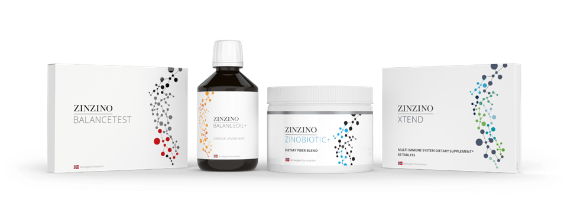
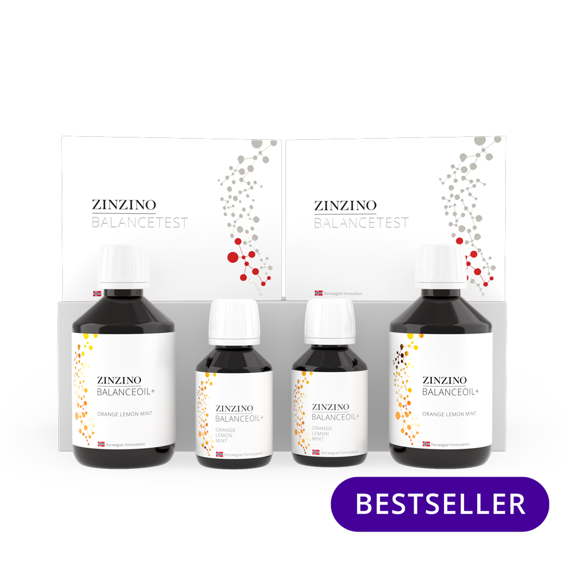
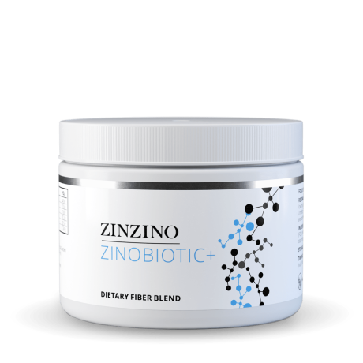
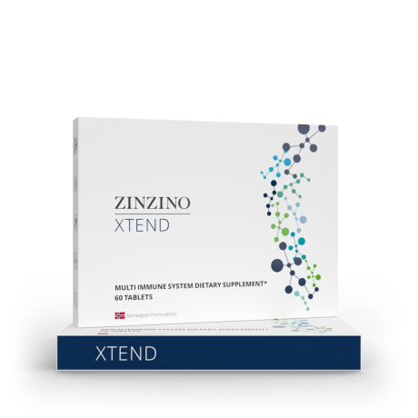

<section class="dietary">
    <div class="container">
    <div class="content">
        
    
    <h2>Zinzinos hälsoprotokoll – tre produkter med flera olika hälsofördelar. 
        Prenumerera på bättre hälsa.
        </h2>    
    <h1>NÄRINGSTILLSKOTT</h1>
    
    <div class="d-flex mb-3 text">
        <div class="p-1.5 text1">
            <p> 
                Det finns många anledningar till att vi idag behöver komplettera vår kost med näringstillskott för att våra kroppar ska kunna fungera som dom ska. Även om vi äter en bra kost så innehåller maten över lag mindre näring idag än för 100 år sedan med alltmer näringsfattiga jordar. Frukter och grönsaker får mogna under transporten från andra länder. Dessutom är mycket av den mat som finns i butiken processad och näringsfattig. Kanske gillar du godis bättre än frukt eller pommes frites bättre än broccoli… 
                Kanske har du inte kraften just nu att göra en kostförändring. Då är detta ett bra alternativ för att ändå kunna fylla på med nödvändiga näringsämnen.
            <br><br>
                För att stärka den självläkande kraften är grunden alltid att vi får rätt näring till våra celler.
            </p>
        </div>
        <div class="text2">  
            <p>   
                Anledningen till att jag själv använder Zinzinos produkter är att det är naturliga produkter med hög kvalitet, testbaserade, prisvärt, en genomtänkt helhetslösning och väldigt smidigt att prenumerera så att man aldrig står utan. Det går naturligtvis att köpa styckevis också men då till ett lite högre pris.
                <br><br>Du kan läsa mer om produkterna här nedan.
            </p>
        </div>
    </div>
       <h4> Jag hjälper dig gärna om du har frågor, om du vill ha en kostnadsfri presentation, hjälp med genomgång av tester eller om du vill ha hjälp med beställning. Om det är första gången du beställer rekommenderar jag att du kontaktar mig.
        <br>BESTÄLL eller KONTAKTA MIG<br>
        
        <div class="d-flex justify-content-evenly ">
        <div>
            <a href="https://www.zinzino.com/shop/2011469820/SE/sv-SE/products/premier-kits">
                <button type="submit" class="btn btn-default">Prenumerera</button>
            </a>
        </div>
        <div class="md-2">    
            <a href="/contacts">
                <button type="submit" class="btn btn-default">Kontata Mig</button>
            </a>
        </div>    
    </div>      
        </h4>
        
    <br>

    
        <h6>Steg 1: BALANSERA</h6>

    <div class="d-flex mb-3">
      <div>   
            <p> 
                Ta reda på din Omega-6:3 balans och fettsyraprofil baserat på 11 fettsyror genom ett enkelt självtest. Ta testet innan du börjar använda BalaceOil+ och sedan igen efter 120 dagar för att mäta dina framsteg och anpassa dina behov i enlighet med din fettsyraprofil.
                BalanceOil+ är ett naturligt kosttillskott med polyfenoler och Omega-3 som hjälper till att upprätthålla kroppens balans mellan fettsyrorna Omega-3 och Omega-6 i dina cellmembran. Detta hjälper till att skydda cellerna från att oxidera och skapa inflammation samt främjar normal hjärt- och hjärnfunktion. 
            </p>
        <h3> HJÄRNA        HJÄRTA        IMMUNFÖRSVAR</h3>
      </div>
      <div class="p-2 zinzino2">
        
      </div> 
    </div>

        <h6>Steg 2: ÅTERSTÄLL</h6>

    <div class="d-flex mb-3">
        <div>  
            <p> 
                ZinoBiotic+ är en helt naturlig och skräddarsydd kostfiberblandning som främjar matsmältningen och en frisk tarmflora. Fibrerna bryts ner i tjocktarmen vilket stödjer tillväxten av goda bakterier.
                ZinoBiotic+ hjälper även till att minska blodsockerökning efter måltider och upprätthålla goda kolesterolnivåer. Fibrerna främjar många hälsosamma tarmfunktioner.
            </p>
        <h3>KOSTFIBER      FRISK TARM        BALANSERAT KOLESTEROL</h3>
        </div>
        <div class="p-2 zinzino2">
            
        </div>  
    </div>
    
        <h6>Steg 3: STÄRK</h6>
    <div class="d-flex mb-3">
      <div>     
        <p> 
            Xtend är ett helt naturligt kosttillskott som stärker immunförsvaret med ett stort utbud av mineraler och vitaminer samt viktiga näringsämnen som 1-3, 1-6 betaglukaner, karotenoider, polyfenoler, metylgruppgivare och cyanogener som hjälper dig att få i dig de mikronäringsämnen och fytokemikalier som du behöver. Detta kompletterar BalanceOil+ och ZinoBiotic+ perfekt. 
        </p>    
    <h3>IMMUNFÖRSVAR – ENERGI - LEDER</h3>
    </div>
        <div class="p-2 zinzino2">
        
    </div> 
    </div>
</div>
</div>
</section>